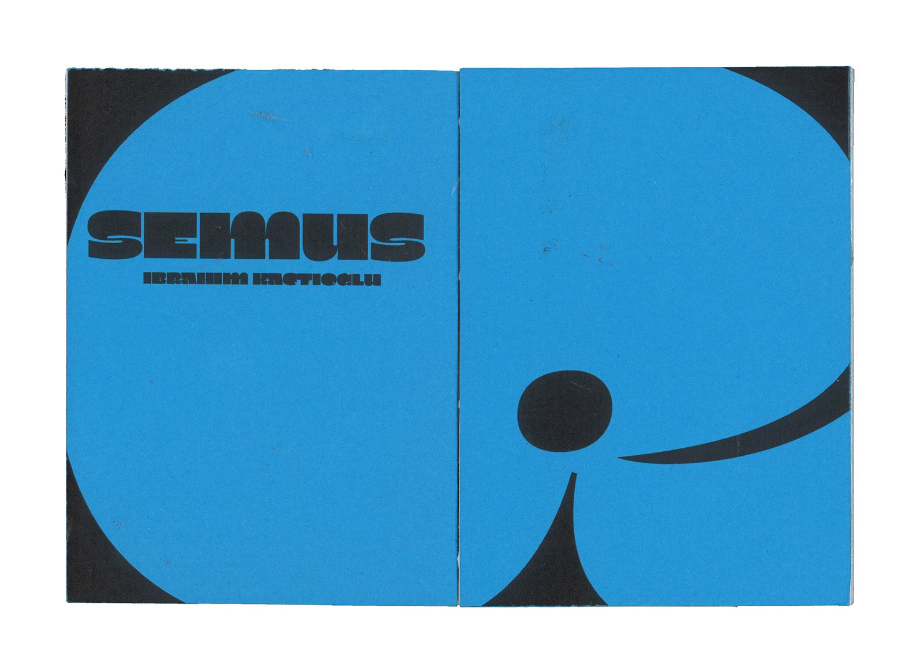
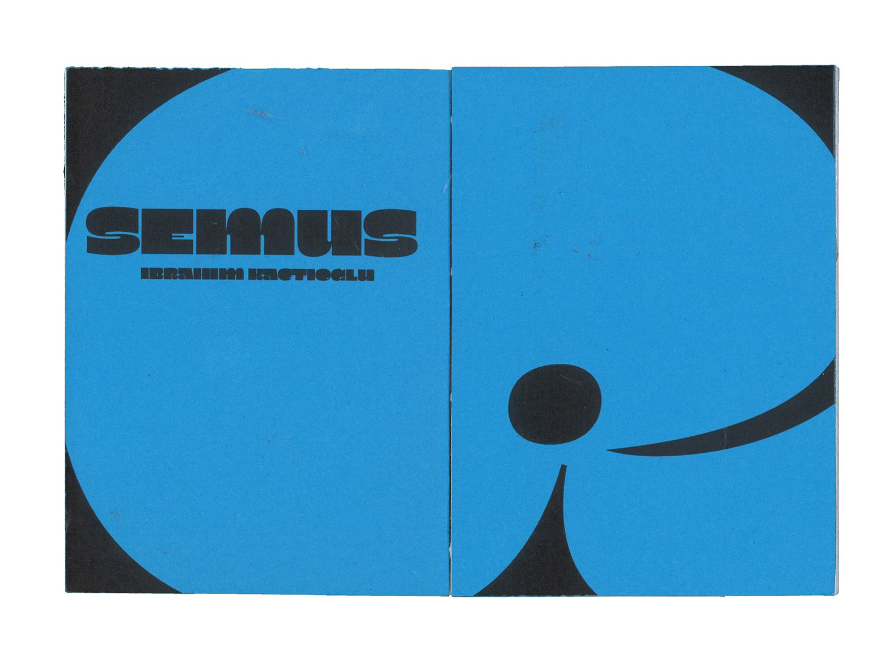

Seamus
Spécimen fictif de la typographie Seamus de Ibrahim Kaçtıoğlu distribuée par 205TF. Le choix du format (A7) est pour accentuer sa fonction de titrage. Tous les textes de ce spécimen viennent des chansons Fine Line et From the dinning table de Harry Styles.
 
